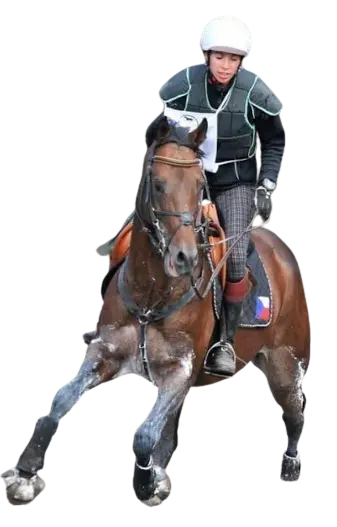

Spolupracuji s CEO, foundery a manažery ve chvílích, kdy schopní lidé a nastavené procesy nestačí – protože výkon začíná brzdit způsob, jakým se rozhoduje, přebírá odpovědnost a funguje pod tlakem.
30 minut • nezávazně • online
„Lídr bez funkčního týmu je jen člověk s nápadem.
Tým bez jasného vedení je jen skupina lidí v chaosu.
Společně vracíme spolupráci jasný směr a funkčnost.“
Jasnost a přehled v tom, co se skutečně děje, a směr, který obstojí.
Leadership není pozice. Je to schopnost stát si za sebou v situacích, které nejsou jednoduché.
Vycházím z prostředí vrcholového sportu a byznysu, kde rozhoduje dlouhodobá stabilita, ne jen okamžitý výsledek.
Tým není jen součet jednotlivců, ale živý systém.
Nejde o to rozhodnout se rychle. Jde o to rozhodnout se pravdivě.
Od individuální spolupráce s lídrem přes práci s managementem a týmem až po cílený workshop. Vyberte si podle toho, kde je teď těžiště vaší situace.
Pro CEO, foundery a manažery, kteří nesou konečnou odpovědnost.
Dává smysl ve chvíli, kdy se rozhodování zpomaluje, odpovědnost se vrací nahoru nebo role přestává sedět.
Pro vedení firmy, které má fungovat jako tým, ne jako skupina jednotlivců.
Dává smysl, když se kompetence překrývají, rozhodnutí se eskalují nahoru a domluvy se neplní.
Pro týmy, jejichž reálný výkon neodpovídá jejich potenciálu.
Dává smysl tam, kde je napětí, o kterém se nemluví, nebo kde spolupráce stojí víc energie, než by měla.
Pro firmy, které mají konkrétní téma a potřebují ho posunout.
Ne obecné motivační školení, ale práce s reálnou potřebou týmu – podle situace, ve které firma právě je.
Game Within je týmový projekt, který jsme vytvořili společně s kolegy z oblasti sportu a koučinku.
Zaměřuje se na práci s hlavou nejen ve chvílích, kdy rozhodují vteřiny, tlak a schopnost udržet směr.
Nejde o „motivaci“.
Jde o systematickou mentální průpravu pro sportovce, kteří chtějí rozvíjet vnitřní stabilitu, koncentraci a schopnost fungovat pod zátěží – dlouhodobě a udržitelně.
Zjistit více →
Leadership & Mental Performance Coach
specialistka na týmovou dynamiku
Professional Certified Coach (PCC) | International Coaching Federation
Moje práce vychází z propojení vrcholového sportu, leadershipu a práce s lidmi v náročných systémech. Tam, kde je tlak, odpovědnost a reálná rozhodnutí.
20+ let zkušeností z managementu, podnikání a výkonnostního prostředí. Pro ty, kteří chtějí mít jasno ve svých rolích, rozhodování a směru.
Více o mně →V době, kdy jsem si nebyla jistá svou pracovní cestou, nevěděla, kam patřím ani kam směřuji, mi pomohla najít směr, větší sebehodnotu i odvahu začít tvořit něco vlastního.
Díky Lucce jsem našla odvahu vytvořit vlastní projekt, který dnes úspěšně pilotně funguje a přináší mi obrovskou radost, zkušenosti i další sebepoznání.
Při každém koučování jsem se cítila bezpečně, přijímaně a bez pocitu hodnocení. Nemusela jsem si na nic hrát ani něco skrývat. Lucka má obrovský dar naslouchat, citlivě vést a zároveň člověka posouvat dál.
Koučku Lucii Kubíkovou si velice vážím pro její profesionální přístup ke klientovi, kdy jsem u ní cítil bezpečný prostor bez hodnocení a mohl tak získat pocit, který mi umožnil se posunout dál. V minulosti jsem absolvoval několik zkušeností, díky kterým vím, že jsem tady na správném místě.
Lucie je žena, která vede s klidem, hloubkou a velkou vnitřní integritou. Nevede člověka k závislosti na kouči, ale k vlastnímu středu, vlastní pravdě a převzetí odpovědnosti za svůj život.
Lucie je leader, který nevytváří následovníky, ale podporuje lidi v tom, aby našli vlastní směr, důvěřovali své intuici a stali se autentickými lídry vlastního života. Právě v tom vidím její skutečnou výjimečnost.
Naše setkání pro mě nebyla vždy jednoduchá. Často mě dostala přesně tam, kam jsem se sama bála podívat. Ale právě díky tomu jsem se dokázala vidět v pravém světle a začít věci měnit.
Díky jejímu koučinku jsem se dostala do bodu, kdy jsem sama se sebou spokojená, plním si sny, na které bych dříve neměla odvahu, a žiji vědomě. Vnímám ten obrovský posun nejen v osobním životě, ale i v podnikání, kterého jsem se dlouho bála.
Lucie mi pomohla odhalit vnitřní omezení a uvědomit si, že překážky v životě jsem si tvořil sám. Díky jejímu přístupu jsem se dokázal podívat na problémy z nového úhlu a našel odvahu měnit postoje. Doporučuji každému, kdo se chce posunout dál.
Do koučování jsem vstoupila v období velkých změn. Od prvního setkání jsem věděla, že jsem v dobrých rukou. Postupně jsme rozplétaly staré vzorce a uvolňovaly místo pro nový směr. Díky Lucii jsem tím obdobím prošla s větší lehkostí.
Na tomto principu stojí celá moje práce.
Ať už vedete tým, nebo hledáte jasno sami v sobě. Začněme rozhovorem.
Domluvit úvodní rozhovor 30 minut • nezávazně • online Úvodní rozhovor slouží k ujasnění situace a dalšího postupu.Preferujete telefon? +420 703 144 351